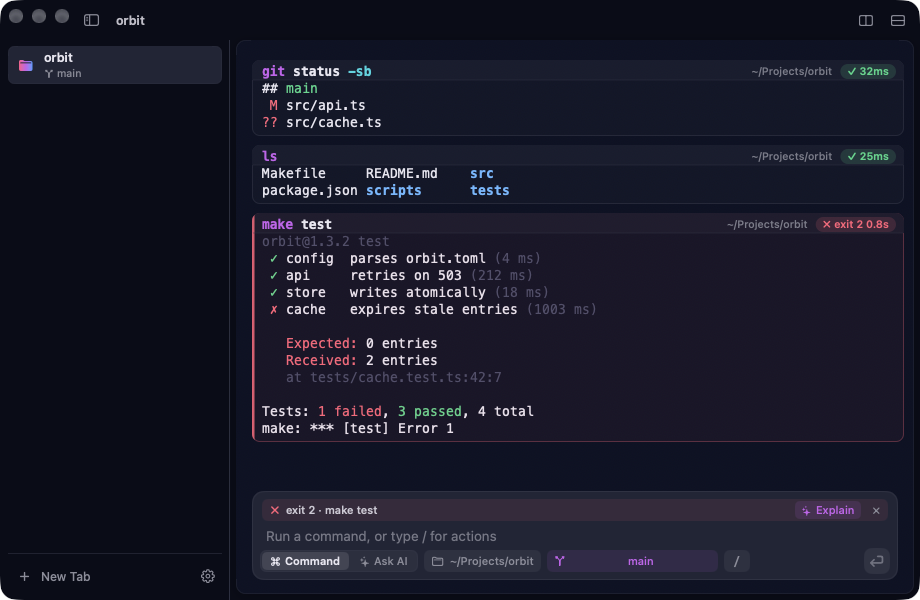
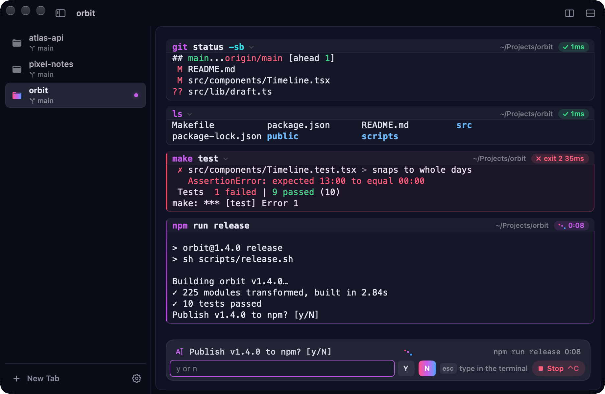
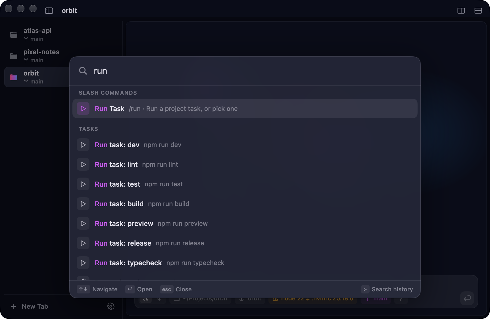
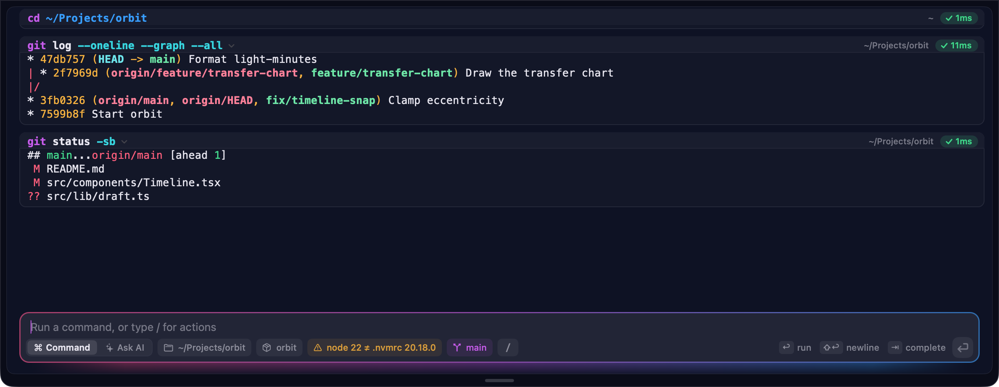
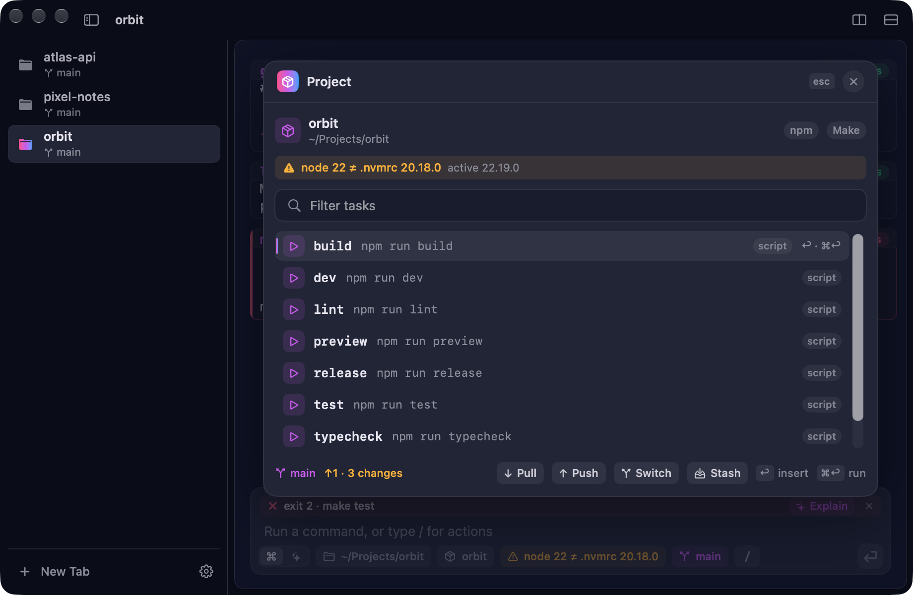
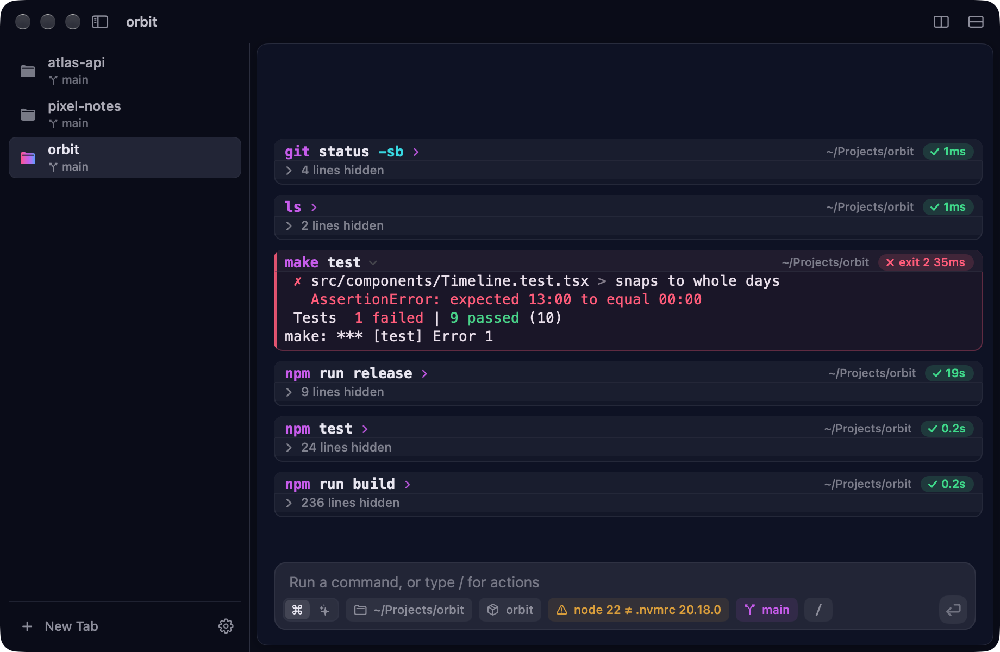
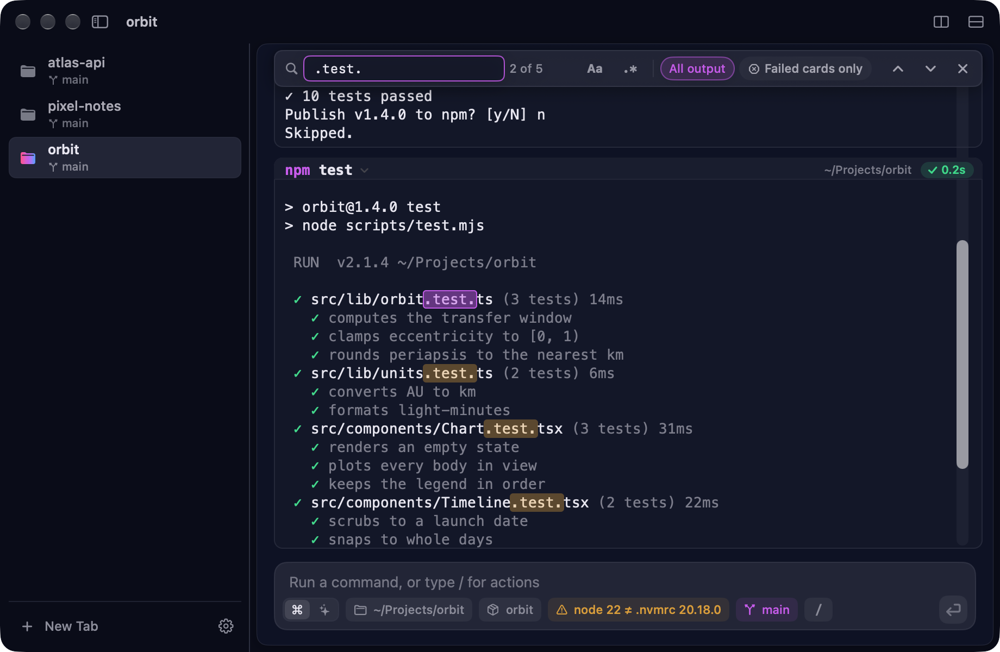
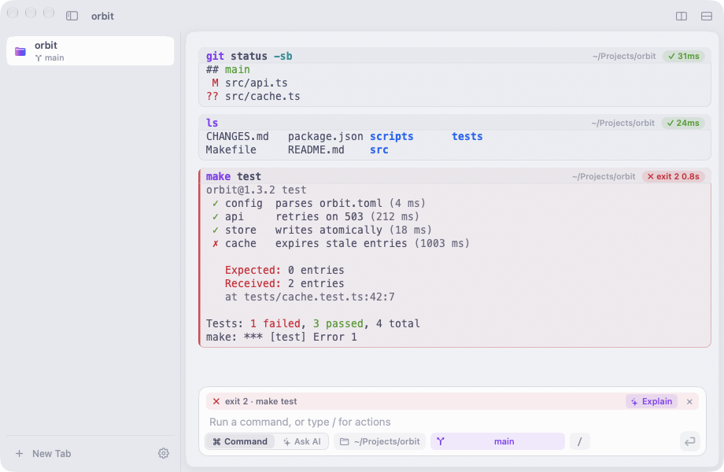
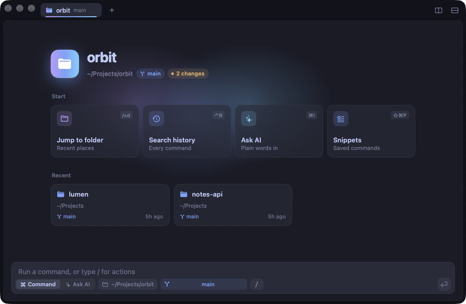

Every command is a card
Output stays with the command that printed it, with its exit code and how long it took.
Copy it, run it again, or let Claude explain why it failed.

Programs that ask get a field
When a script wants a yes or no, or a password, the composer becomes a question field. Passwords stay hidden.
Esc hands the keys back to the terminal.

One palette for everything
⌘K finds any menu command, slash command, tab, theme, snippet or recent folder, the ones you use most first. Themes preview as you pass them, and > searches your history.

A terminal from anywhere
Press ⌃` in any app and a Quick Terminal slides down, with its session as you left it. Press it again, or Esc on an empty prompt, to put it away.

It knows what project you're in
Node, Swift, Rust, Go, Python, Make, just or Docker Compose: one chip opens the project's tasks and its git state. Return fills in a task, ⌘Return runs it.
Pull, push, switch and stash fill in their command for you to run. A quiet chip warns when node or python doesn't match the project.

Long output, under control
Fold a card to one line, or search the pane, one card or just the failures. Quit whenever you like: Cue reopens your windows, tabs and splits where you left them.


Your own Claude, one keystroke away
Ask it to explain an error, fix the last command, or write the one you describe. The rest of Cue is just as close.
- ⌥⌘EExplain the last error
- ⌥⌘FFix the last command
- ⌘IAsk for a command
- ⌘KCommand palette
- ⌃`Quick Terminal
- ⌃RSearch your history
- ⇧⌘PSnippets
- ⌘DSplit the pane
Claude runs on your Anthropic key, kept in the Keychain, or on the claude CLI you already use. Secrets are redacted first, and nothing passes through us. Privacy
Make it look like yours
Eighteen themes with a live preview. Tabs in a sidebar or along the top, and as many splits as you need.


Open a new tab.
Free, with no account, no trial and no tracking. Cue updates itself.
brew install --cask coursion-studio/tools/cue